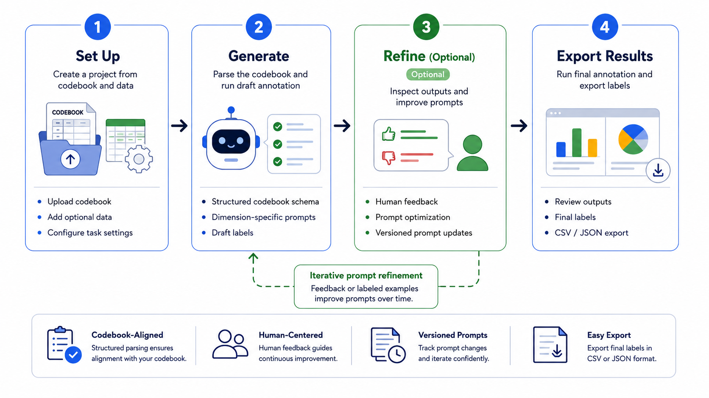

Label text the way
you would.
You set the labels. CALICO writes the prompts and labels the rest.

From your labels to a labeled dataset, in four steps
-
01
Define your labels
Bring your codebook, or start from a ready-made example and edit it.
-
02
It writes the prompts
CALICO turns each label into LLM instructions. You write nothing.
-
03
Show a few examples
It studies your labeled examples and tunes itself to match how you label.
-
04
Label everything
Run it on your whole dataset and export the results as CSV or JSON.
Abstract
Qualitative researchers rely on codebooks to keep annotation consistent, but applying a codebook at scale by hand is slow, and prompting an LLM with it naively drifts from the codebook's definitions. CALICO is an interactive system for codebook-aligned LLM annotation. Researchers upload a codebook and a dataset; CALICO parses the codebook into a structured schema, decomposes it into an ordered multi-step annotation pipeline, and runs draft annotation with real-time progress monitoring. Against optional gold labels, it reports per-dimension accuracy and confusion matrices, mines recurring error patterns, and turns human feedback into versioned prompt revisions through iterative calibration and automatic prompt optimization. Final labels export to CSV or JSON for downstream analysis.
BibTeX
@misc{yuan2026calico,
title = {{CALICO}: Codebook-Aligned {LLM}-assisted Iterative Coding and Optimization},
author = {Yuan, Boqin},
year = {2026},
url = {https://calico-annotation.github.io}
}